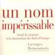
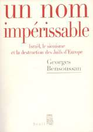
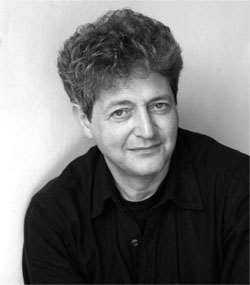

Par Paul Benaim pour Guysen International News
Jeudi 10 avril 2008
Les écrits d’un historien sur une période que l’on croit bien connaître peuvent ébranler des certitudes. Tel est le cas du dernier ouvrage de Georges Bensoussan qui apporte un éclairage inattendu, à la fois sur la façon dont la Shoah a été perçue da le Yichouv puis en Israël, et sur les liens de causalité entre la destruction des Juifs d’Europe et la création de l’Etat juif.

Les analyses de l’auteur reposent sur des sources multiples, discours d’hommes politiques, articles, livres, témoignages, qui font l’objet de larges citations. L’importance du travail de l’historien réside dans la remise en question d’idées reçues. L’intelligence du propos et la qualité de l’écriture, font qu’à aucun moment la lecture de l’ouvrage ne suscite la lassitude.
La perception de la Shoah et l’attitude vis-à-vis des rescapés Aujourd’hui le souvenir de la Shoah occupe une place centrale dans l’éducation et la vie politique en Israël, mais il n’en a pas toujours été ainsi. La perception de la Shoah et parallèlement l’attitude vis-à-vis des rescapés, ont évolué au fil des années. C’est là le premier volet de l’ouvrage de Georges Bensoussan qui distingue « la période « cananéenne » 1 et la période actuelle. La période du mépris et du silence Le Yichouv, à partir de l’expérience des pionniers cultivateurs ou travailleurs manuels, des défenseurs des moshavim et des kibboutzim, avait forgé une image du nouveau juif « régénéré », le sabra, héritier de Josué et des Maccabim, différent du juif du ghetto, le « petit juif » victime des pogroms. Ce « nouveau juif » voulait se démarquer du juif persécuté de la diaspora. Or, les millions de juifs assassinés au cours de la Shoah reflétaient précisément l’image humiliante du faible, du vaincu, image rejetée par les nouvelles générations, celles qui avaient construit le pays et résisté avec succès à ses agresseurs arabes, avant puis pendant la guerre d’indépendance de 1948. Ainsi s’explique la place réduite de la Shoah dans les médias du Yichouv et une forme de mépris vis-à-vis des rescapés, « les restes du massacre » selon l’expression biblique, et cela malgré l’héroïsme des révoltés du ghetto de Varsovie, des passagers de l’Exodus, de l’immigration illégale et des milliers de rescapés présents dans les rangs de la Haganah et des commandos du Palmach dans les combats de la guerre d’indépendance en 1948 2. L’opinion publique reprochait aux victimes « d’avoir été conduits à l’abattoir comme des agneaux ». A cette vision s’associait un sentiment de culpabilité des rescapés qui se reprochaient d’avoir survécu alors que toute leur famille avait été exterminée. Ainsi s’explique le manque de chaleur de l’accueil des rescapés et le silence sur la Shoah, qui étaient la règle jusqu’au début des années 60. La période actuelle: unification de la mémoire Le procès Eichmann (1961) avec les témoignages publics des survivants, devenus des « monuments vivants », puis les jours d’angoisse qui ont précédé la Guerre des Six jours, avec la menace d’une nouvelle Shoah (1967), le traumatisme de la guerre de Kippour (1973), ont radicalement modifié l’opinion: un rapprochement unificateur s’est établi entre le sionisme, la destruction des Juifs d’Europe et l’Etat d’ Israël. La Shoah s’inscrit désormais dans la continuité de l’histoire du judaïsme et d’Israël, processus logique lorsque l’on sait que

- L’Afrika Korps de Rommel n’était pas très loin de Tel-Aviv en 1942, - le Mufti de Jérusalem, allié de Hitler, prônait d’étendre la « solution finale » à la Palestine, - des nazis ayant fui la justice avaient mis leurs talents au service des gouvernements arabes ennemis de l’Etat juif. Cette prise de conscience tardive se traduit aujourd’hui par la place du génocide dans l’enseignement de l’histoire, les voyages de la jeunesse israélienne à Auschwitz, les cérémonies commémoratives en Israël, où fusionnent l’hommage aux soldats tombés pour la défense du pays et le souvenir des juifs d’Europe assassinés, enfin l’édition et la diffusion des écrits en hébreu de rescapés de la Shoah.
Israël aurait-il existé sans la Shoah?
Le débat sur l’existence d’un lien de causalité entre la Shoah et la création de l’Etat d’Israël est toujours actuel.

Le nazisme et ses conséquences au Proche-Orient. Le premier effet de l’accession d’Hitler au pouvoir a été l’expulsion des juifs d’Allemagne, qui a été à l’origine de leur Alya massive entre 1933 et 1939.
Les informations sur l’extermination des juifs européens parviennent au Yichouv dès 1942, mais l’Agence juive ne dispose d’aucun moyen diplomatique ou militaire susceptible de peser sur le cours tragique des évènements.
Entre 1945 et 1950, près de 300.000 Juifs européens, dont la majorité étaient des rescapés de la Shoah, réussirent à immigrer malgré le blocus britannique (1945-1948). L’horreur de la Shoah a-t-elle joué un rôle dans le vote de l’ONU du 29 novembre 1947 en faveur du partage de la Palestine? Bien des observateurs considèrent que ce vote a été dicté par la compassion des nations pour les persécutions subies par le peuple juif. Cela n’est pas prouvé. Georges Bensoussan rappelle l’abstention de la Grande Bretagne et le fait qu’aucune des nations participant au vote ne se sentait responsable des crimes nazis. Un état en gestation depuis un demi-siècle
« Toute chronologie est jugement. Se limiter aux années 1945-1948 pour comprendre la naissance de l’Etat d’Israël, c’est établir entre le génocide et la refondation de l’Etat juif un lien de causalité qui semble aller de soi. »
C’est en ces termes que l’auteur nous invite à prendre la question plus en amont, avant 1940, à une période où le Yichouv avait déjà créé l’essentiel des infrastructures du futur Etat, une administration, une industrie, une agriculture en plein essor et une armée organisée qui a pu triompher de la coalition arabe en 1948. Un coup presque mortel porté au rêve sioniste Si la Shoah a pu accélérer la naissance de l’Etat juif, elle l’a privé de ses réserves démographiques, perte immense, coup presque mortel pour le sionisme. Et l’on est amené à évoquer ce qu’aurait pu être un Etat d’Israël renforcé par le soutien des communautés disparues, les descendants des six millions de juifs assassinés entre 1941 et 1945. Pour Georges Bensoussan, en définitive, la destruction des Juifs d’Europe a failli compromettre la naissance d’Israël et encore aujourd’hui ses effets négatifs sur l’Etat juif persistent.
«La Shoah ne crée pas l’Etat d’Israël, elle en parasite la naissance au
contraire, et l’existence et le sens, jusqu’à aujourd’hui encore».
----------------------
Source Georges Bensoussan Un nom impérissable Israël, le sionisme et la destruction des Juifs d’Europe Ed. du Seuil 2008 Georges Bensoussan est historien et professeur d’histoire. Il est l’auteur de plusieurs livres sur la Shoah et le sionisme. Il est rédacteur en chef de la « Revue d’histoire de la Shoah » et directeur de la collection du « Mémorial de la Shoah » aux éditions Calmann-Lévy.
Texte repris du site de Guysen, en 2008. Mis à jour le 20.08.19, par Menahem R. Macina, sur Academia.edu
1 Le mouvement cananéen, mouvement intellectuel né dans le Yichouv au début du XXe siècle « estimait qu’il fallait dissocier le destin d’Israël, enraciné au Proche-Orient, de celui des Juifs de la diaspora » (G.B). ↩
2 Armée aguerrie de 1936 à 1945 par sa participation à l’autodéfense contre les insurgés arabes et la lutte contre les forces de l’axe. (GB). ↩